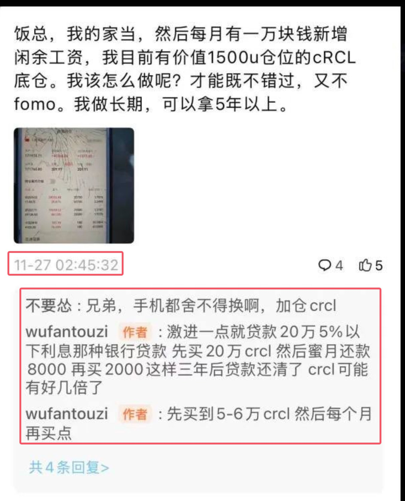

#1 · wufantouzi · 2026-07-01T11:01:04.000Z我总是会这样思考如果我今天没有soxl我是想买入还是卖空如果我今天没有任何crcl的持仓我是想买入还是做空？答案毫无疑问如果刚好有现金仓位我会一次买到自己 20-25% 净资产仓位
#3 · tothemoonjustin · 2026-07-01T20:25:03.000Z去年11月份，劝人贷款买。。遵循你的指示，现在应该满仓了，每个月还要还利息。。真的是害人不浅。。
#8 · foxxushou · 2026-07-01T11:57:54.000Z它自始至终都是一家没有流量入口的稳定币代工厂，赚的是合规资质和技术运维的辛苦钱，从来没真正掌握过产业链的定价权。传统支付市场的利润它吃不到，链上市场的蛋糕还要被 USDT 和渠道方分走大半. 美股那么多没必要盯着这个
#12 · hejin1983014173 · 2026-07-01T16:05:12.000Z激进一点就贷款20万5%以下利息那种银行贷款，先买20万crcl然后蜜月还款8000再买2000这样三年后贷款还清了crcl可能有好几倍了。这个怪自己
#14 · Crypto_miningFF · 2026-07-01T18:57:20.000ZCircle一天跌近20%，Open USD联盟名单吓到市场了。Visa、Stripe、Coinbase、BlackRock——阵容确实豪华。但我的判断：错杀。典型的"叙事恐慌 > 基本面恶化"。短期情绪是别人的，长期逻辑是自己的。